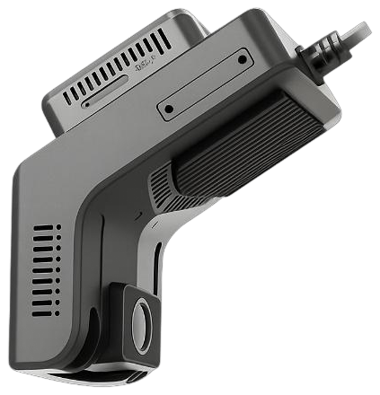

Lançamento do Grupo RealPonto
Sua frota ao vivo.
Seus riscos sob controle.
Câmera veicular inteligente e plataforma PontoCam para ver, localizar e agir em tempo real.
Câmera dupla
4G
GPS
IA embarcada
Operação em tempo real
12 veículos online
Frota ativa
Veículo RP-08
48 km/h
4G estável
VIA
AO VIVO
CABINE
IR

Ao vivoVídeo e localização
Alerta DMSUso de celular
01Mais prevenção
02Evidências em vídeo
03Gestão centralizada
04Decisão mais rápida
Mais visão. Mais decisão.
O que importa,
O que importa,
na hora em que acontece.
Recursos essenciais para proteger motoristas, veículos e a operação.
GPS e trajetos
Localização centralizadaAlertas DMS
Fadiga, celular e distraçãoAlertas ADAS
Faixa e risco de colisãoEvidências em vídeo
Playback e downloadBotão SOS
Resposta em situações críticas
Plataforma PontoCam
Informação organizada para transformar imagens em ação
Dashboard, streaming, playback, eventos, rastreamento, cerca eletrônica, ranking de motoristas e controle de acessos em uma experiência centralizada.
- Perfis de acesso personalizados
- Consulta de eventos com vídeo associado
- Monitoramento da frota em um único ambiente
- Interface preparada para português, inglês e espanhol
PontoCam
GR
VISÃO GERALOperação em tempo real
Hoje, 14:32Veículos ativos28+4 hoje
Eventos críticos03Requer atenção
Câmeras online96%27 de 28
São Paulo e região
VEÍCULO 018 • AO VIVOFrontal
Ocorrências recentes
Fadiga detectadaVeículo 012 • 14:27
Desvio de faixaVeículo 018 • 14:21
Câmera reconectadaVeículo 006 • 14:14

1080pGravação em alta definição
2 canaisFrontal + cabine com IR
4G + GPSConectividade e localização
PontoCam Light
Compacta no para-brisa. Grande no controle da operação.
A câmera combina dois canais, recursos de inteligência artificial, comunicação 4G, GPS/GNSS, Wi-Fi local, áudio e armazenamento em cartão microSD.
ADASAlerta de saída de faixa e risco de colisão frontal
DMSFadiga, distração e uso de celular pelo motorista
ArmazenamentoCartão TF/microSD de até 512 GB
OperaçãoTemperatura de -20 °C a +70 °C e entrada 9-36 V DC
Como funciona
Da instalação à tomada de decisão em três etapas
01
Instalação no veículo
A PontoCam Light é instalada e configurada para garantir campo de visão, comunicação, GPS, gravação e calibração da IA.
02
Conexão e envio de dados
A solução utiliza 4G para eventos, localização, consultas e visualização ao vivo conforme a franquia contratada.
03
Gestão pela plataforma
O gestor acompanha eventos, vídeos, trajetos, alertas e indicadores para agir com mais rapidez e segurança.
Planos PontoCam
Escolha a franquia que combina com o uso da sua frota
A câmera, a plataforma e o plano de dados fazem parte da mensalidade. A implantação é cobrada por câmera.
ESSENCIAL5 GB
Para acompanhamento de eventos e consultas pontuais
R$167,90/veículo por mês
- Câmera PontoCam Light em comodato
- Acesso à plataforma PontoCam
- Plano 4G de 5 GB - TIM ou Vivo
- Streaming sob demanda e gestão de eventos
MAIOR FRANQUIA
PROFISSIONAL10 GB
Para operações com maior frequência de consultas e downloads
R$197,90/veículo por mês
- Câmera PontoCam Light em comodato
- Acesso à plataforma PontoCam
- Plano 4G de 10 GB - TIM ou Vivo
- Mais disponibilidade para vídeo e evidências
Implantação e instalação técnicaR$ 297,90 por câmera
Inclui ativação, cadastro do veículo, configuração, calibração e testes. Deslocamentos fora da área padrão podem ser orçados separadamente.
Estimativa inicialR$ 1.679,00/mêsImplantação: R$ 2.979,00
Estimativa comercial sem impostos adicionais, deslocamentos especiais ou itens opcionais. Valores e condições sujeitos à análise e proposta formal.
Uso de dados: transmissão ao vivo, playback remoto e downloads consomem a franquia contratada. A disponibilidade e a qualidade dependem da cobertura móvel.
Gravação local: requer cartão microSD homologado, dimensionado e fornecido conforme a proposta comercial.
Feita para operações em movimento
Onde a PontoCam faz diferença
Entregas e logística
Mais evidência e controle em cada rota.
Equipes externas
Acompanhe deslocamentos e atendimentos.
Transporte de passageiros
Mais segurança dentro e fora do veículo.
Frotas corporativas
Gestão simples para veículos da empresa.
Perguntas frequentes
Informações claras antes de colocar a frota em operação
Reunimos as principais dúvidas sobre câmera, conectividade, gravação e planos.
Ver todas as 30 perguntasSim. Com cartão microSD instalado e a gravação configurada, o vídeo continua sendo armazenado localmente. A transmissão ao vivo e o envio à plataforma dependem da conectividade.
Principalmente visualização ao vivo, downloads e solicitações remotas de vídeo. O consumo varia conforme resolução, duração das sessões e quantidade de eventos.
Sim. A PontoCam Light possui dois canais: câmera frontal e câmera voltada para a cabine, com infravermelho para o ambiente interno.
Sim. A plataforma permite playback, visualização e download de vídeos, conforme a disponibilidade da gravação e as regras do serviço contratado.
Nos planos apresentados, a câmera é disponibilizada em comodato durante a vigência contratual, conforme as condições da proposta e do contrato.
Vamos falar sobre sua frota?
Receba uma proposta alinhada à sua operação
Conte quantos veículos você possui e como pretende utilizar os vídeos. Nossa equipe ajudará a definir o plano mais adequado.